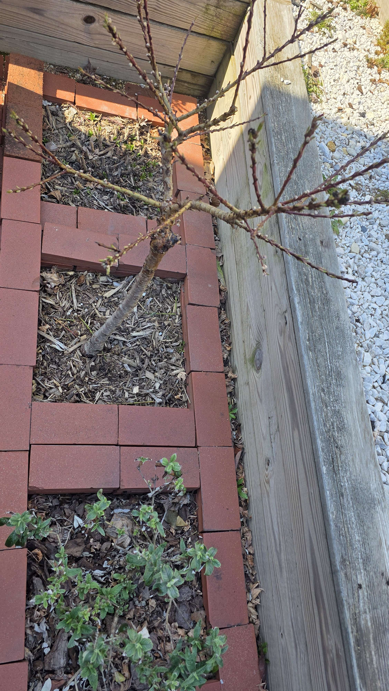

March 29, 2026
Before the show
A quieter look at the dwarf peach before the pink show started, bare branching still exposed, buds swelling along the stems, and just enough movement to hint that bloom was close. This is the useful stage to remember later, because once the tree explodes into flower it’s easy to forget how quickly it turned.
All structure and promise, the kind of in-between moment that only feels dramatic after you’ve seen what comes next.

- buds swelling along the branches
- tree still mostly bare
- pre-bloom structure easy to see
- Pugster behind it still mostly acting as quiet background structure